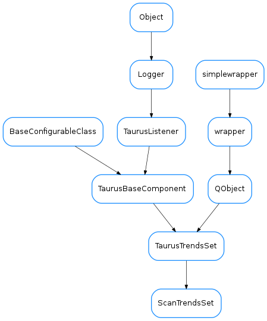

ScanTrendsSet¶

-
class
ScanTrendsSet(name, parent=None, autoClear=True, xDataKey=None)[source]¶ Bases:
taurus.qt.qtgui.plot.taurustrend.TaurusTrendsSetAn specialized TaurusTrendSet that instead of being updated via events, it receives new data directly via a PyQt slot
receives signal containing record data from a scan.
When an event is received, all curves belonging to a TaurusTrendSet are updated.
Note that internally each curve is treated as a RawData curve (i.e., it is not aware of events by itself, but it relies on the ScanTrendSet object to update its values)
See also
TaurusTrendSet-
DEFAULT_X_DATA_KEY= 'point_nb'¶
-
clearTrends(replot=True)[source]¶ Reimplemented from
TaurusTrendsSet.clearTrends().Note
If the autoClear property is True for this trend set, this method is called automatically every time a data_desc package is received.
-
connectWithQDoor(qdoor)[source]¶ connects this ScanTrendsSet to a QDoor
Parameters: qdoor ( QDoororstr) – either a QDoor instance or the QDoor name
-
dataChanged¶
-
disconnectQDoor(qdoor)[source]¶ connects this ScanTrendsSet to a QDoor
Parameters: qdoor ( QDoororstr) – either a QDoor instance or the QDoor name
-
onPlotablesFilterChanged(flt)[source]¶ slot to be called whenever the plotables filter is changed. It will call
clearTrends()if flt is NoneParameters: flt ( list<method>) –
-
scanDataReceived(packet)[source]¶ packet is a dict with {type:str, “data”:object} and the accepted types are: data_desc, record_data, record_end and the data objects are: seq<ColumnDesc.Todict()>, record.data dict and dict , respectively
-